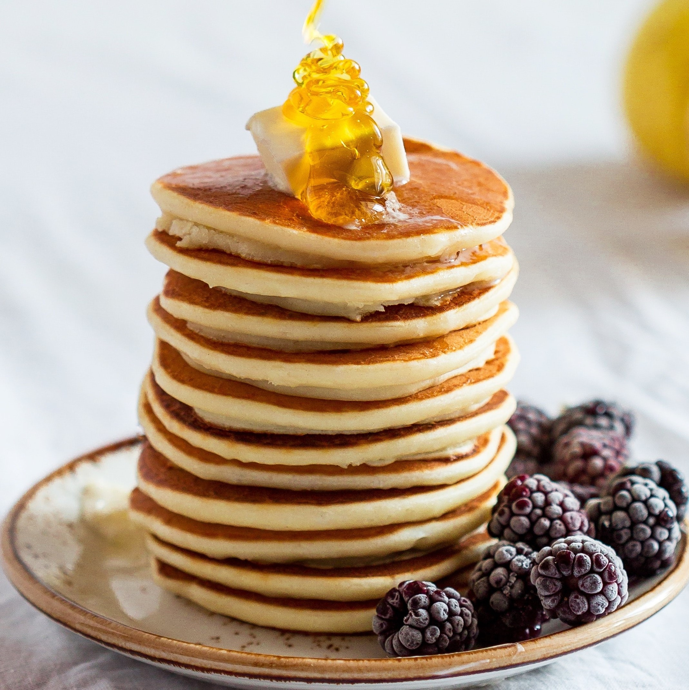
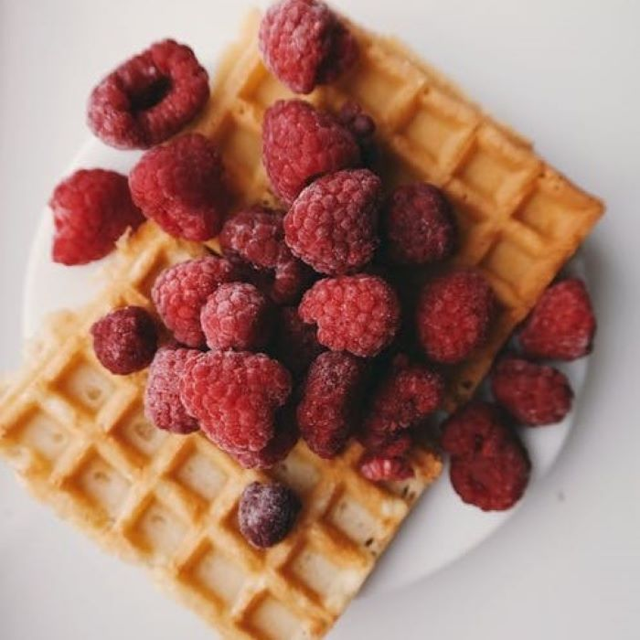

PANCAKES

- "You can’t roll waffles around jam and cream as you can with crepes, which are technically part of the pancake family."
- "Waffles have about 100 calories than pancakes, and more cholesterol too."
- "Pancakes are way older than waffles; they’ve been around in some form since at least the 1430s."
- "If you have a squeeze bottle and a knack for it, you can make pancakes in literally any shape."
WAFFLES

- "Chicken and pancakes is not a thing for a good reason."
- "Both plain pancakes and waffles are lightly sweet and a little bready, although waffles are more so on both counts; they generally have more butter and sugar in the batter and become more caramelized during cooking, so they taste a little richer."
- "Waffles trap syrup (or whatever else you want to top them with) in all their handy nooks and crannies while staying crisp for a relatively long while."
- "Waffles make better sandwiches than pancakes do."